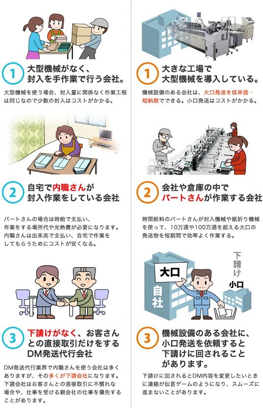

DM発送代行会社比較 方法
このページではDM発送代行業者を探すための「判断基準」をまとめました。
当社お客様からの貴重な意見を参考に作りました。DM発送担当者様の判断基準にしてください。
自社に合うＤＭ発送代行会社を見つけるには判断基準が必要です。
経験者の判断基準を参考にして自社に合うＤＭ発送代行会社を選ぶことをお勧めします。
チェックポイントの判断基準
当社に寄せられた2006年9月から現在までのお客さんの声 件(自筆)と
当社DM発送担当者様が直接お客様との会話中に感じた疑問やお悩みを基に作成しています。
お客様の声 件はここをクリック
お客様アンケート原文 件はここをクリック
お客様アンケート集計結果はここをクリック
DM発送代行業者 比較項目
「DM発送代行業者比較表」では以下7つの項目を比較します。
比較しやすいようにチェックシートとチェック方法を作成しました。 ご利用ください。
１ 価格
２ ＤＭ発送件数にあう会社選び
３ 対応
４ ＤＭ発送担当者の負担軽減
５ 会社実績
６ 安心・セキュリティー
７ ＤＭで売上ＵＰを考える場合
１ 価格
ＤＭ発送代行会社を決めるときに価格は重要になります。
結果から言うとＤＭ発送代行専門会社であれば通常特約ゆうメールを使います。
特約ゆうメールを使えば大きな価格の違いはありません。
DM発送代行会社は得意な発送件数があります。
ＤＭ発送代行で大きな差が出る項目
ＤＭ発送代金で大きなウェイトを占めるのは以下の3点です。
１ 集客費用（営業社員）の負担が一番高くなります。
２ 高額な設備の減価償却
３ 貸倒引当金
メディアボックスでは
１ 営業社員はいません。
２ 高額な設備投資はありません。
３ 前金性になります。
そのため低価格でのＤＭ発送が行えます。
見積書は総額で比較してください。
・基本料金
・郵便局までの運送費
・諸費用
等が計上される場合があるためです。
返品物のＥＸＣＥＬ化の金額
初めてＤＭ発送をするときには住所不明等で帰ってくるＤＭを処理することをよく忘れます。
次回発送のためにも宛名データの整理は必須になります。
ＤＭ発送代行会社で無料ＥＸＣＥＬデータでもらえると大きなコスト削減になります。
２ DM発送件数にあう会社
「1000通のDM発送を業者に依頼したが断られた」
「10パターンのDM発送を依頼したら断られた」
などの話をよく聞きます。
DM発送代行会社は得意な発送件数があります。
DM発送作業には大きく3つに分かれます
・100通以上5万通まで
・5000通以上10万通まで
・3万通以上

100通～5万通までが得意な会社
専任担当者（営業社員ではなく）が付いて100通以上から
DM発送を通常業務として行える会社はほとんどありません。
理由は手間と金額が合わないからです。
100通から行える会社は大掛かりな機械設備を持たず、自社ビルを持たず、
内職さんやパートさん中心の手作業で行っている会社です。
大手ＤＭ発送代行会社のどの下請け会社が多いのが特です。
5000通以上10万通が得意な会社
手作業で行う場合と小さな機械で行う場合があります。
作業は主に内職さんやパートさんに行ってもらいます。
小さな機械も入れているので作業スピードは速くなります。
10万通が得意な会社
大きな機械で行うDM発送作業が得意です。
機械を使う場合には準備作業が必要です。
少数のDMでも、作業準備は大量作業と同様になります。
そのため3万通以上は特に得意な分野になります。
３ 対応
ＤＭ発送担当者の作業負担を減らすことが出来るＤＭ発送代行会社を選ぶことが
思っているよりも重要になります。
特にトラブル時の対応ができる会社を選ぶことは大切です。
トラブル時の対応（メディアボックス例）
ＤＭ発送担当者様は通常の業務を行いながら、ＤＭ発送担当を行うことがほとんどです。
そしてＤＭ発送作業には変更や小さなトラブルがよく発生します。
トラブル時に対応しなければいけないのがＤＭ発送担当者です。
トラブルには以下のような内容があります。
これらのトラブルは
・未然に防ぐ
・発生時には迅速対応
・トラブル対応提案がある
のできるＤＭ発送代行会社を選んでおくことは大きな保険になります。
| 問題点 | メディアボックスでの解決策 | |
|---|---|---|
| 宛名データ |
|
専任担当者にすぐに電話してください。 ラベル作成前にすぐに対応が必要になります。 作成後でも対応策を提案します。 |
| 進捗状況が わからない |
|
お客様から宛名データや荷物が届くなど、何かが進行する時点でメール連絡します。 また封入部材の破損や部数不足等も速やかに連絡します。 |
| 発送中止 |
|
発送中止は進捗状態により対応が変わります。 速やかに状況確認をしてベストな対応を提案します。 |
| 封入内容変更 |
|
封入前なら無料で変更できます。 既に封入済みの場合は開封して封入物を取り出し、新しい封筒に再封入を行います。 |
| 住所不明等による返品物処理持ち戻り品のデータ化 |
|
持ち戻り品は当社にて基本無料でEXCELデータ化します。 返品物の現物は専門廃棄業者で廃棄します。 |
時間を取られない対応
電話を掛けた時にすぐに担当者につながることは大切です。
電話を何度も回されたり、電話に出た人が進行状況を知らないため
初めから説明することが無い体制のＤＭ発送代行会社は判断ポイントになります。
メディアボックスでは
見積は3時間以内に届くか
専任担当者制度化
電話をかけて担当者につながるか
４ ＤＭ発送担当者の負担軽減
ＤＭ発送担当者は様々な負担がかかります。
具体的には以下の表になります。
実際に経験すると分かりますがかなりのストレスと不安になりますのですぐに相談でき、解決策をアドバイスできる専任担当者が付くＤＭ発送代行会社は負担軽減になります。
| 問題点 | メディアボックスでの解決策 | |
|---|---|---|
| 本来の仕事以外に時間が取られる | 増える業務
|
|
| 失敗すると責任が発生する | 責任問題
|
|
| 進行状況を聞かれる | どこから聞かれる
|
|
| 変更が発生する | 変更例
|
|
| 持ち戻り品のデータ化 | 発送後の処理
|
|
５ 会社実績
ＤＭ発送代行会社を選ぶときには会社概要を見ると思います。
そこに書かれていることを深読みしてみます。
東証プライム（旧一部上場）会社と何社取引があるか
ＤＭ発送代行業界は下請け構造なので一部上場会社との直接取引数は限られてきます。
また東証プライム上場会社は監査が厳しいため安心の基準になります。
東証プライム上場会社と取引を行うには
・企業が決めた帝国データバンクや東京商工リサーチの評価点数を上回る
・監査が入るので対応ができる社内体制
などが必要な場合があります。
メディアボックスでは東証プライム上場会社との直接取引が102社になります。
帝国データバンク・東京商工リサーチの評価点
決算書を毎年、帝国データバンク・東京商工リサーチに出している会社は信用が得られます。
評価点が付きますので取引判断材料になります。
株式会社メディアボックスでは下記になります。
帝国データバンク 企業コード：401570189
東京商工リサーチ 企業コード：401418880
直接取引実績は何社あるか？
取引実績はやはりたくさんあることが実績になります。
メディアボックスでは
取引会社数累計４３，９７５社
取引会社数：８５２１社
お客様の声
お客様からの自筆の声を取り続けている会社は信用できます。
お客様の声で使われている単語をまとめて多いものから順番に並べるとその会社の状況が分かります。
下記はメディアボックスのお客様の声に使われている単語の多さを大きさに替えてあります。

お客様からの評価
客観的な立場から判断されるお客様の声はその会社を知るうえで参考になります。
具体的な数字で示されていることが必要です。
実際に当社を使っていただいた1105件のお客様からの結果です。

６ 安心・セキュリティー
自社の大事なお客様情報をＤＭ発送代行会社に渡すため、セキュリティ面や安心できるシステムがあることが比較するときには重要です。
では具体的にどこを見ればよいかを紹介します。
１ プライバシーマーク
ＤＭ発送代行会社であれば通常は取得しています。
比較する点としてはいつから取得しているかでセキュリティに重点を置いているかが分かります。
登録証のプライバシーマークの下にある「登録番号」の最後にある（９）とあるのが取得してから何回更新したかを意味します。更新を9回しているということになります。
2年に1度 更新審査がありますのでそれを通らないと更新ができません。

２ 発送証明書
本当に発送しているか？あるいは全部発送しているのか？心配になると思います。
特に反応率の悪かった時には特にその思いが強くなると思います。
ＤＭ発送代行会社であれば「特約ゆうメール」を使用しています。
特約ゆうメールを使用すると日本郵便納品時に「差出表」という下図がもらえます。
これで発送内容が確認できます。
差出表を受け取るのが翌営業日になる事もあるため、お客様にコピーをお渡しできるのは２営業日後あるいは３営業日後になります。
発送日・発送郵便局・数量を確認してください。

３ 個人情報漏洩保険
万一、個人情報が漏洩した場合には専門のコンサルタントや個人情報漏洩に詳しい弁護士がすぐに必要になります。それらの対応が個人情報漏洩保険に入っていることが大切です。
当社でも下記表のように保険契約しています。

４ 個人情報削除は米国国家安全保障局推奨方式
お客様にとってとても重要な顧客情報をお預かりします。
顧客情報は絶対に外部に漏れないようにするために完全な削除と削除証明が必要です。
ＤＭ発送後１か月ぐらいで住所不明等の返却が完了します。
当社では返却されたＤＭを無料でEXCELデータ化してお返していますので１か月後ぐらいに
米国国家安全保障局（NSA）推奨基準で完全に削除（各クラスタに乱数を2回書き込んだ後に、0（ゼロ）で1回上書き）

５ 宛名データ送信は専用システムを使用していますか？
宛名データをメール添付で送るのは危険です。
具体的には
・宛名データと暗証番号を別々に送っても、両方とも間違ったメールアドレスに送れば開封できてしまいます。
・一度送ったメールは取り消すことができない。
メール添付の問題点を解決する方法は指定したクラウドにあげて、それを取りに行く方法です。
この方法であれば送り先を間違えることはありません。
また暗証番号を知っている人以外は開くことができません。
６ 廃棄物処理
住所不明等でＤＭ発送代行会社に返却されたＤＭをＥＸＣＥＬ化した後のＤＭをどう処理するかになります。
専門の業者に依頼して確実に処分してもらう必要があります。

７ ＤＭで売上ＵＰを考える場合
ＤＭ発送をする目的は売上ＵＰではないでしょうか？
本気で売上ＵＰをＤＭで考えている場合は、実例をたくさん持ち多くのコンサルタントと繋がっているＤＭ発送代行会社が必要です。
また、実際に実例をたくさん持ち実績のある会社に聞くことが重要です。
誰に教えてもらうかが勝負を分けます。
今、ＤＭで売上を上げるのに効果的な方法は以下の3つになります。
１ ＡＢテスト
売上アップに欠かせないのがＡＢテストです。
いくら良いＤＭを作っても比較対象が無いと分かりません。
ＡＢテストをたくさん経験していると、ＡＢテストを行わない会社さんは本当に損をしていると思います。
理由として
・自社のデータが蓄積できない
・ＤＭ作成よりも手間が掛からない
・費用対効果が大きい
ただ、効果のでるＡＢテストには失敗と成功をたくさん重ねた人のアドバイスが重要になります。
| ＡＢテスト | |
|---|---|
| とは |
1か所だけを変えた2種類のＤＭを作成して どちらのＤＭが下記内容で優れているかを検証する方法 ・反応率 ・購入率 ・ＬＴＶ ※（一定の取引期間に顧客がもたらす利益） |
| 目的と 得られる効果 |
・より良い反応率を得るため ・自社の方向性を知るため ・自社の強み弱みの把握 ・メールよりも確実な連絡ツール ・HPと連携してROAS(広告費用対効果)をあげる |
| ＤＭ発送代行会社 に求められるもの |
・ＡＢテスト実験数（300例以上） ・コンサルタントの協力 ・ＡＢテストの実施方法・手順 ・ＡＢテストの成否判断基準 ・的確なアドバイスができる |
２ ＤＭトラッカー（特許申請済）
郵送ＤＭ最大の問題点は誰が読んだかが分からないことです。
しかし顧客別QRコードを使い解決できました。
| ＤＭトラッカー | |
|---|---|
| できること |
|
| 目的と 得られる効果 |
DMトラッカーを使うことで、購入率が高い人に追客ができます。 ・フォローメール ・電話 ・特典DM ・ニュースレター ・SNSへの誘導 |
| 顧客の選別 |
◇見込み客と見たページの例 料金表ページ ：購入を検討している 会社概要ページ ：信頼できるか確認している 商品・サービス ：情報収集している 申し込みページ ：購入意欲がある |
３ ニュースレター
ニュースレターは一度初めて1年間続くと辞める人の少ない媒体です。
実際にニュースレターだけで売上をあげている会社様もあります。
ある会社では月に約80社発送で15年以上発送し続けています。
私はとてもコストパフォーマンスの良い媒体と実感しています。
ちなみに当社もお客様に毎月発送させていただいています。
| ニュースレター | |
|---|---|
| とは |
昔からあるツールです。 お客様とのコミュニケーションツールです。 別名「瓦版」「通信」「便り」等という意味もあり、売込を主にするものでは無く、お客様との関係を強化するために発送します。 |
| 目的と 得られる効果 |
ニュースレターだけで自社商品を10年以上売り続けて会社もあります。 ・自社商品を覚えてもらう ・親密度ＵＰ（接書頻度ＵＰ） ・重要連絡をする手段 ・売上アップ |
| ＤＭ発送代行会社 に求められるもの |
・ＤＭ発送会社でも出し続けている ・お客様に合ったニュースレター作成代行会社を紹介できる ・状況による用紙選びが分かっている ・的確なアドバイスができる |
最近増えては来ましたが、ＡＢテストは必ず行ってください。
御社の財産になります。
ＡＢテストを行う場合、「ＡＢテストを行う」と言って頂ければ2種類以上に分類しても合算しての件数に値する料金で安く発送できます。是非利用してください。